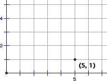

Geometry — 672.
1
1.1
This is an attempt to create a slimmer, more appealing approach to teaching geometry. Optimally, three to five sections should be completed per class.
1.2
1: Overview
1.1: Description
1.2: Contents
2: Points, Lines, Planes, and Space
2.1: Points, Lines, Planes, and Space
2.2: The Cartesian Coordinate System
2.3: Quadrants and Negative Coordinates
2.4: x, y, and Distance
2
2.1
Lesson
A point is a specific location which has no length, breadth, or depth; therefore it can only be measured by its location, as opposed to its dimensions. If it has size, it would represent all locations within its boundaries. A line is an infinite number of points (as they have no size, an infinite number of them is needed to create a line; that quality is known as dense) which has length, but does not have breadth or depth. As it has no breadth or depth, it does not have any curvature. A plane is an infinite number of lines which has breadth and length, but no depth. Space is an infinite number of planes which has breadth, length, and depth. As lines, planes, and space are constructed of infinite components, they are infinite in the applicable dimentions.
Vocabulary
- dense
- line
- plane
- point
- space
Questions
- What is a point?
- What is a point's relationship to a line?
- What is a line's relationship to space?
- What is meant by dense?
- What does an infinite number of points without breadth or depth constitute?
- What are a line's dimensions?
2.2
Lesson
Cartesian coordinate systems are planes that been divided by an infinite grid. The lower-left point of the grid is known as the origin. In example, a 1 centimetre grid may be placed over a plane, with the point at each square centimetre being marked according to the number of centimetres from the origin vertically and horizontally, in the format "([horizontal distance], [vertical distance])". Note that the origin is also the point (0, 0). Thus, the point five centimetres horizontally from the origin and one vertically would be labeled "(5, 1)". When a point is drawn, it is drawn with dimensions so that it can be seen, and notation is used to be more specific.
Vocabulary
- Cartesian coordinate system
- origin
Questions
- Define "Cartesian coordinate system"
- Describe the format used to represent points on a Cartesian coordinate system.
- What point is at the origin?
- A point is 6 units vertically from the origin, and 17⅚ units horizontally from the origin. Write its coordinates using standard notation.
2.3
Lesson
The numbers representing distance from the origin are known as coordinates. A point in a Cartesian coordinate system can have negative coordinates. Shown is the point (-4, -2). The sections of the Cartesian coordinate system to the upper right, upper left, lower left, and lower right are known as quadrants. They are numbered Ⅰ, Ⅱ, Ⅲ, and Ⅳ, respectively.

Vocabulary
- coordinate
- quadrant
- quadrant Ⅰ
- quadrant Ⅱ
- quadrant Ⅲ
- quadrant Ⅳ
Questions
- What is a quadrant?
- Draw a Cartesian coordinate system illustrating quadrant Ⅲ.
- Draw the point (5, -3.2) in a Cartesian coordinate system.
- What is the number of the upper-left quadrant?
- What the number of the quadrant in which the point (6, -3) is?
- What is another name for the point (0, 0)?
2.4
Lesson
The horizontal line through the origin is known as the x-axis, and the vertical line through the origin is known as the y-axis. The coordinate representing a point's distance from the origin along the x-axis is known as the x-coordinate, and the coordinate representing a point's distance from the origin along the y-axis is known as the y-coordinate. The distance between two points can be found by calculating the absolute value of the difference of their coordinates. The definition of distance states that "the distance between two points is  ". In example, the distance between (-4, 2.3) and (1, 3) =
". In example, the distance between (-4, 2.3) and (1, 3) =  ≈ 5.048762225. Note that the distance between point A and point B is always equal to the distance between point A and point B.
≈ 5.048762225. Note that the distance between point A and point B is always equal to the distance between point A and point B.
Vocabulary
- x-axis
- x-coordinate
- y-axis
- y-coordinate
Questions
- What is the formula for calculating the distance between two points?
- What is the distance between (0, 0) and (2, 2)?
- Explain the conceptual distinction between the x-coordinate and the y-coordinate.
- What is the distance between (5, 4) and (3, 5)?
- What is the x-coordinate of the point (5, 9.3546)?
- What is the distance between (6.4, 4) and (2, 4.4)?
- What is the distance between (-3, 6) and (3, 5.32)?
2.5
Lesson
A line is the set of ordered pairs (x, y) which satisfy the equation Ax+By=C, where A and B are not both equal to zero.